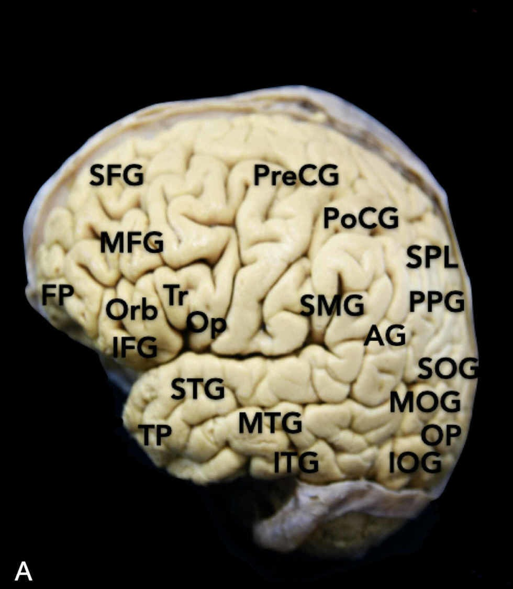
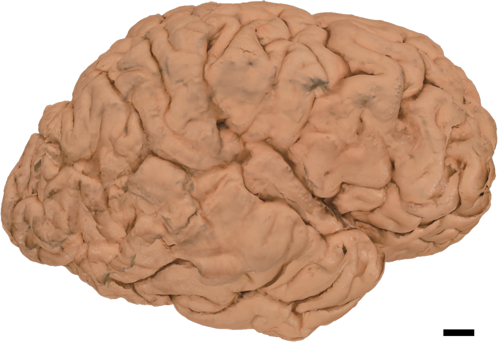
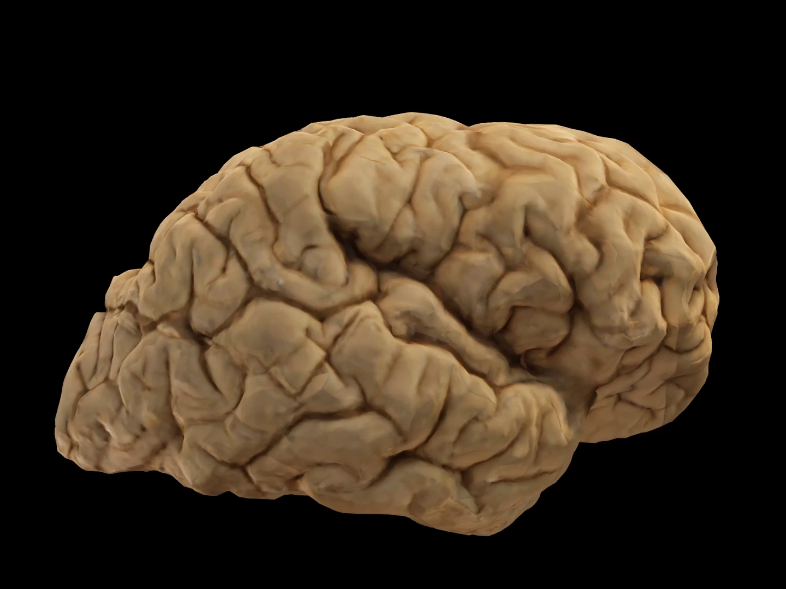
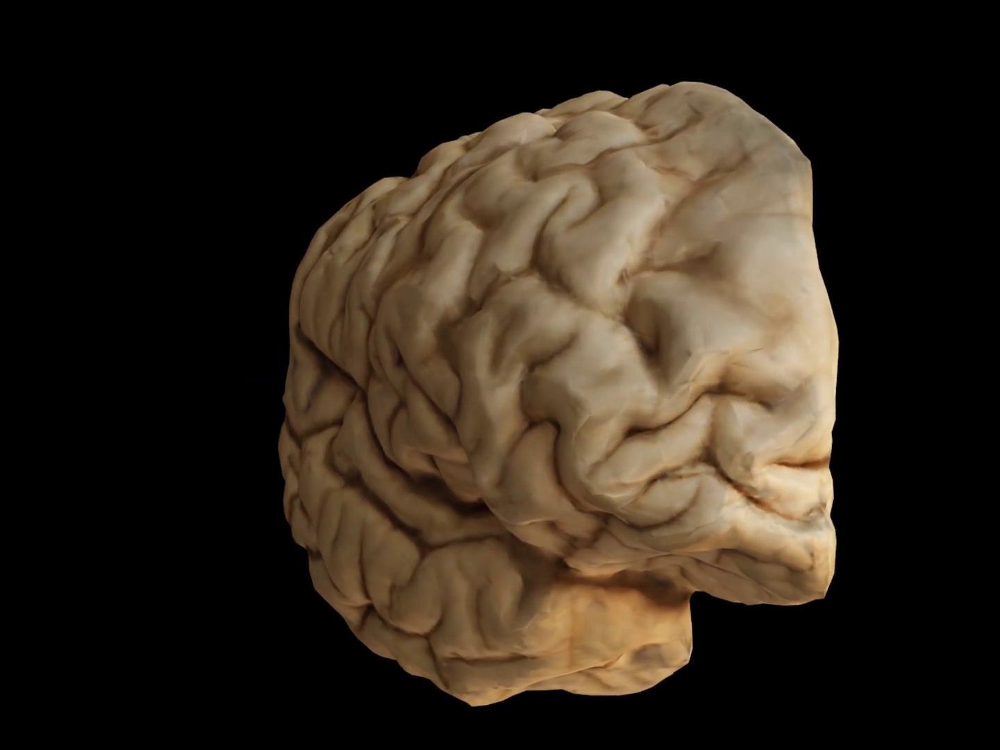
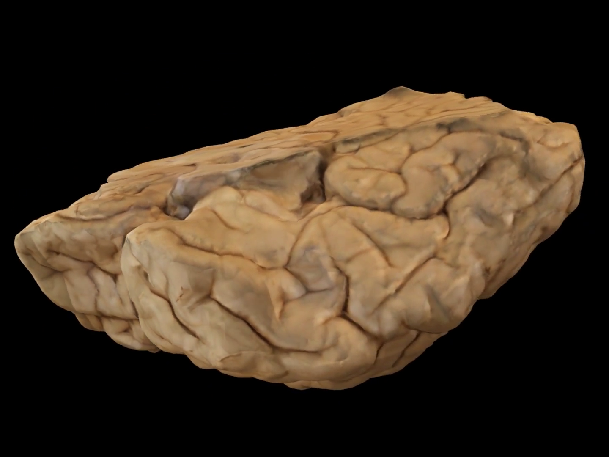
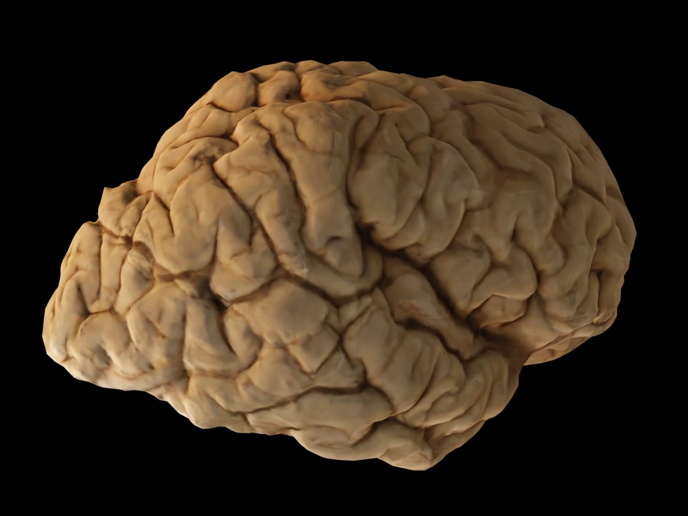

Chapter 22 · observed anatomy and source-derived surface geometry
A folded surface in three dimensions
These are separate prepared human specimens from two studies. Their colours, camera directions and sizes are independent. Neither is registered to the chapter’s midline MRI. Rotation changes the view of a fixed reconstruction; it does not show neural activity or living brain motion.
1 · Locate gyri on a prepared cortical surface
Vigo et al. (2020), Figure 1A. The source’s FP mark places the frontal pole at image-left; superior is up. Original labels are retained. No physical scale is supplied.


FP frontal pole; TP temporal pole.
PreCG / PoCG precentral / postcentral gyrus.
SFG / MFG / IFG superior / middle / inferior frontal gyrus.
Orb / Tr / Op pars orbitalis / triangularis / opercularis of IFG.
SPL superior parietal lobule; PPG posterior parietal gyrus.
SMG / AG supramarginal / angular gyrus.
STG / MTG / ITG superior / middle / inferior temporal gyrus.
SOG / MOG / IOG superior / middle / inferior occipital gyrus.
The source also prints uppercase OP without expanding it in the Figure 1 caption; no new author-defined meaning is assigned here. This is distinct from the caption-defined Op above.
Vigo, Cornejo, Nunez, Abla and Rodriguez Rubio, Immersive Surgical Anatomy of the Craniometric Points, Cureus 12:e8643 (15 June 2020), Figure 1A. © 2020 Vigo et al.; CC BY 4.0. Isolated-source crop only; no external human figure is delivered. Print image:80 mm, about311 ppi.
2 · Compare a photograph with a rotating reconstruction
Shintaku et al. (2019), Case 1: a formalin-fixed right cerebral hemisphere reported without neuropathological signs. The photograph and surface movie belong to that reported case; no pixelwise registration is supplied.



The source has 693 frames at30 fps, lasting23.1 file seconds. Controls use file time only. Camera movement has no physiological-time mapping and the movie does not loop. This delivery preserves the original H264 video stream in an MP4 container; it adds no synthetic frames.
The authors report60–80 photographs per hemisphere, with lighting/tone processing before reconstruction. They identify flattening at the supporting acrylic plate and inability to reconstruct internal structures as limitations. The original mesh and raw photograph collection are not supplied here; the published movie cannot be turned into a validated cutaway or metric 3D model.








Shintaku, Yamaguchi, Toru, Kitagawa, Hirokawa, Yokota and Uchihara (10 July 2019), PLOS ONE 14:e0219619, Figure3 and S1 Movie. © 2019 Shintaku et al.; CC BY 4.0. PNG samples are unaltered decoded frames. Exact source identities, transformations, rights and reproduction.